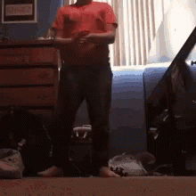

toolbar=no np. pokazuje lub ukrywa standardowy pasek narzędzi
directories=no, ukrywa przyciski katalogów
menubar=no, pokazuje lub ukrywa menu przeglądarki
height=280, ustawia wysokość okna
width=160, ustawia szerokość okna
top=200, ustawia położenie okna względem góry ekranu
left=200, ustawia położenie okna względem lewej strony ekranu
